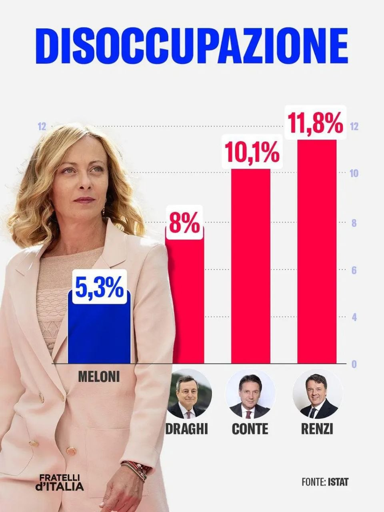

The infographic under scrutiny L'infografica sotto esame
What the Fratelli d'Italia graphic shows Cosa mostra la grafica di Fratelli d'Italia
Source claimed: ISTAT · No period, methodology or indicator specified Fonte dichiarata: ISTAT · Nessun periodo, metodologia o indicatore specificato

© Fratelli d'Italia. Reproduced for fact-checking purposes. © Fratelli d'Italia. Riprodotta a fini di verifica giornalistica.
- No period specified — single month? annual average? quarterly?Nessun periodo specificato — singolo mese? media annuale? trimestrale?
- "Conte" merges two completely different governments (Conte I M5S-Lega, Conte II M5S-PD)"Conte" fonde due governi completamente diversi (Conte I M5S-Lega, Conte II M5S-PD)
- Gentiloni (Dec 2016 – Jun 2018) is absent despite governing during a significant declineGentiloni (dic 2016 – giu 2018) è assente pur avendo governato durante un calo significativo
- Declining unemployment is a long-run trend since 2014 — across all governmentsIl calo della disoccupazione è un trend strutturale dal 2014 — trasversale a tutti i governi
ISTAT 151_914 · Monthly & Annual ISTAT 151_914 · Mensile e annuale
Final verdict: values confirmed, methodology misleading Verdetto finale: valori confermati, metodologia fuorviante
Unemployment rate · 15–74 years · Italy · raw monthly and annual · ISTAT 151_914 Tasso di disoccupazione · 15–74 anni · Italia · mensile grezzo e annuale · ISTAT 151_914
| PremierPresidente | Infographic claimDato infografica | Closest ISTAT matchMese ISTAT più vicino | Mandate avg.Media mandato | Mandate rangeRange mandato | Verdict |
|---|---|---|---|---|---|
| Renzi Feb 2014 – Dec 2016 |
11.8% | Sep 2016: 11.79% one month, near end of mandateun mese, verso fine mandato |
12.14% | 9.93% – 14.43% | ⚠️ CHERRY-PICKED⚠️ CHERRY-PICKED |
| Conte I+II Jun 2018 – Feb 2021 |
10.1% | Feb 2020: 10.02% one month, during COVID onsetun mese, inizio COVID |
9.80% | 6.44% – 11.34% (6.44% = COVID distortion) |
❌ CHERRY-PICKED + MISLEADING❌ CHERRY-PICKED + FUORVIANTE |
| Draghi Feb 2021 – Oct 2022 |
8% | Sep 2022: 7.92% one month, last month of mandateun mese, ultimo mese di mandato |
8.82% | 7.45% – 10.71% | ⚠️ CHERRY-PICKED⚠️ CHERRY-PICKED |
| Meloni Oct 2022 – present |
5.3% | Aug 2024: 5.32% one month, seasonal summer lowun mese, minimo stagionale estivo |
6.75% | 4.95% – 8.41% | ❌ CHERRY-PICKED (best month)❌ CHERRY-PICKED (mese migliore) |
|
⚠️ MISSING: Gentiloni (Dec 2016 – Jun 2018)⚠️ ASSENTE: Gentiloni (dic 2016 – giu 2018) Unemployment fell from ~12.1% to ~10.9% during Gentiloni's mandate — a significant decline not credited in the infographic.La disoccupazione è scesa da ~12,1% a ~10,9% durante il mandato Gentiloni — un calo significativo non riconosciuto nell'infografica. |
|||||
- Raw data: ISTAT 151_914 (annual) + ISTAT 151_874 (monthly, latest EDITION per period)Dati grezzi: ISTAT 151_914 (annuale) + ISTAT 151_874 (mensile, EDITION più recente per ogni periodo)
- Mandate averages: arithmetic mean of all available monthly values within each mandate periodMedie mandato: media aritmetica di tutti i valori mensili disponibili nel periodo di ciascun mandato
- No other transformations appliedNessun'altra trasformazione applicata
ISTAT 151_914 · Annual 2013–2025 · Italy ISTAT 151_914 · Annuale 2013–2025 · Italia
The full picture: unemployment has been falling since 2014 — continuously, across all governments Il quadro completo: la disoccupazione cala dal 2014 — in modo continuo, trasversale a tutti i governi
Unemployment rate (%) · 15–74 years · Total · Italy · Annual · ISTAT 151_914 Tasso di disoccupazione (%) · 15–74 anni · Totale · Italia · Annuale · ISTAT 151_914
Government mandate periodsPeriodi di mandato (2013–2025):
| PremierPresidente | PeriodPeriodo | Unemployment at startDisoccupazione inizio | Unemployment at endDisoccupazione fine | ChangeVariazione |
|---|---|---|---|---|
| Renzi | Feb 2014 – Dec 2016 | 13.95% (feb 2014) | 12.06% (dec 2016) | −1.89pp |
| Gentiloni (absent from infographic)(assente dall'infografica) | Dec 2016 – Jun 2018 | 12.06% (dec 2016) | 10.42% (jun 2018) | −1.64pp |
| Conte I+II | Jun 2018 – Feb 2021 | 10.42% (jun 2018) | 10.71% (feb 2021) | +0.29pp (COVID effect) |
| Draghi | Feb 2021 – Oct 2022 | 10.71% (feb 2021) | 8.11% (oct 2022) | −2.60pp |
| Meloni | Oct 2022 – present | 8.11% (oct 2022) | 5.48% (mar 2026, latest) | −2.62pp |
- Raw data: 13 annual observations, ISTAT 151_914, Italy 15–74 years, totalDati grezzi: 13 osservazioni annuali, ISTAT 151_914, Italia 15–74 anni, totale
- No baseline manipulation — Y-axis auto-scaled to data rangeNessuna manipolazione della baseline — asse Y autoscalato al range dei dati
- No other transformationsNessun'altra trasformazione
ISTAT 151_914 · 151_874 · Italy ISTAT 151_914 · 151_874 · Italia
Infographic claims vs mandate averages Claim dell'infografica vs medie del mandato
Unemployment rate (%) · Each PM's cherry-picked figure vs actual mandate average Tasso di disoccupazione (%) · Cifra cherry-picked di ciascun premier vs media effettiva del mandato
INFOGRAPHIC CLAIMS (cherry-picked months)CLAIM INFOGRAFICA (mesi cherry-picked)
ACTUAL MANDATE AVERAGESMEDIE EFFETTIVE DEL MANDATO
- Cherry-picked values: the monthly ISTAT data point closest to the infographic figure for each PMValori cherry-picked: il dato mensile ISTAT più vicino alla cifra dell'infografica per ciascun premier
- Mandate averages: arithmetic mean of all available raw monthly observations (151_874) within each mandate periodMedie mandato: media aritmetica di tutte le osservazioni mensili grezze disponibili (151_874) nel periodo di ogni mandato
- roughViz.BarH does not support negative values: all values shown are positive rates. Bars ordered descending (highest unemployment first) for both charts.roughViz.BarH non supporta valori negativi: tutti i valori mostrati sono tassi positivi. Barre ordinate decrescente (disoccupazione più alta prima) in entrambi i grafici.
Structural analysis · ISTAT 151_914 · 2013–2025 Analisi strutturale · ISTAT 151_914 · 2013–2025
What the infographic deliberately omits Cosa l'infografica omette deliberatamente
Three structural distortions in the Fratelli d'Italia graphic Tre distorsioni strutturali nella grafica di Fratelli d'Italia
1. Gentiloni is invisible 1. Gentiloni è invisibile
Paolo Gentiloni governed Italy from December 2016 to June 2018 — 18 months during which unemployment fell from 12.1% to 10.4% (−1.7pp). His government is absent from the infographic, even though the decline it oversees is silently attributed to subsequent premiers. Paolo Gentiloni ha governato l'Italia da dicembre 2016 a giugno 2018 — 18 mesi durante i quali la disoccupazione è scesa da 12,1% a 10,4% (−1,7pp). Il suo governo è assente dall'infografica, anche se il calo che supervisiona viene tacitamente attribuito ai premier successivi.
2. "Conte" conflates two governments 2. "Conte" fonde due governi
Conte I (Jun 2018–Sep 2019, M5S + Lega) and Conte II (Sep 2019–Feb 2021, M5S + PD) were politically opposite governments. Merging them into a single "10.1%" figure is statistically misleading — and hides the COVID distortion of 2020 (when recorded unemployment fell to 6.44% due to furlough classification). Conte I (giu 2018–set 2019, M5S + Lega) e Conte II (set 2019–feb 2021, M5S + PD) erano governi politicamente opposti. Unirli in un unico "10,1%" è fuorviante — e nasconde la distorsione COVID del 2020 (quando la disoccupazione registrata è scesa al 6,44% per la classificazione della cassa integrazione).
3. August is the seasonal minimum 3. Agosto è il minimo stagionale
Italian unemployment systematically dips in August due to seasonal employment in tourism and agriculture. August 2024 (5.32%) is lower than both July 2024 (5.93%) and September 2024 (5.62%). Using a seasonal minimum month for Meloni, while using end-of-mandate or mid-mandate months for others, is an inconsistent cherry-pick. La disoccupazione italiana cala sistematicamente in agosto per l'occupazione stagionale nel turismo e nell'agricoltura. Agosto 2024 (5,32%) è inferiore sia a luglio 2024 (5,93%) sia a settembre 2024 (5,62%). Usare il mese di minimo stagionale per Meloni, mentre si usano mesi di fine o metà mandato per gli altri, è un cherry-picking inconsistente.